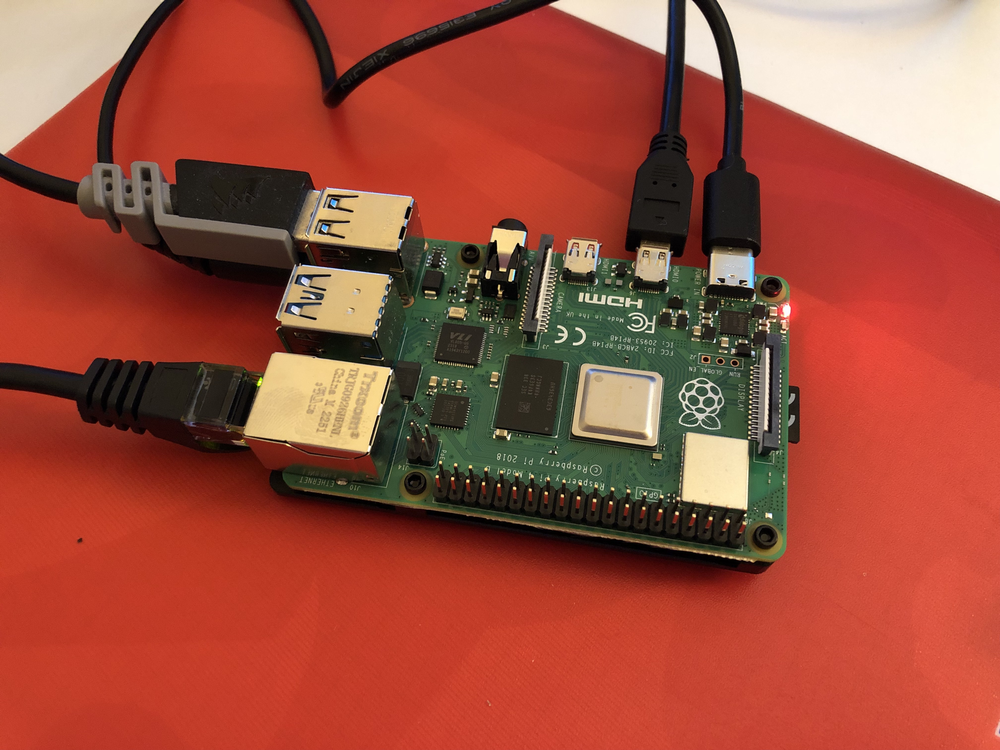
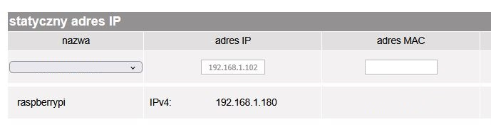
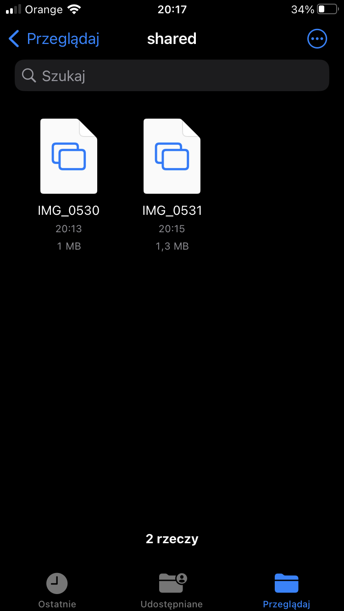
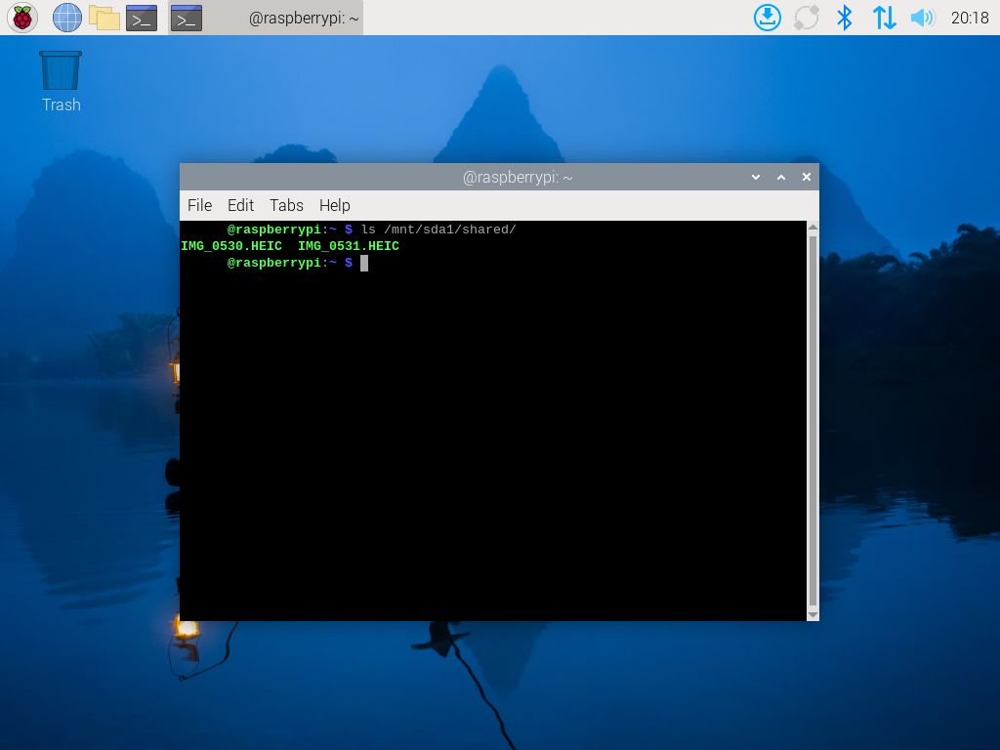
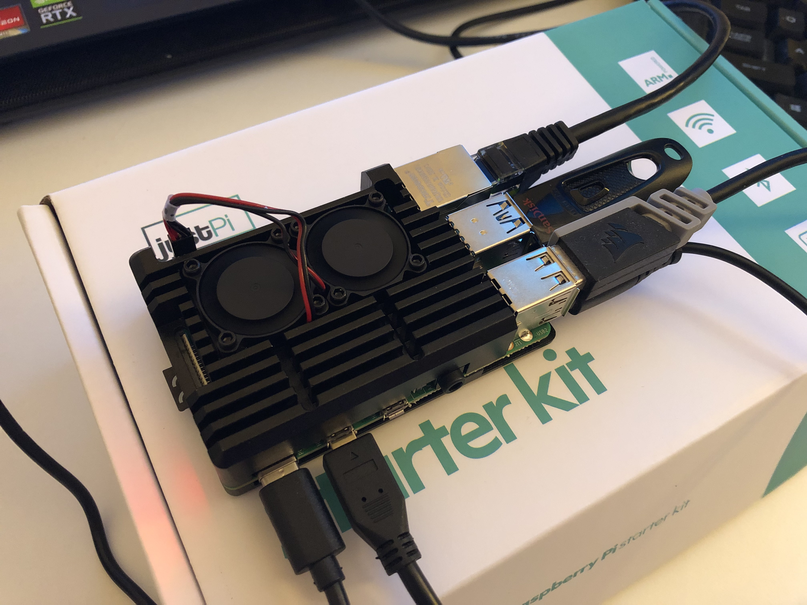

Raspberry Pi based Network-attached Storage
About my project
My project is a simple NAS (Network-attached Storage), based on Raspberry Pi 4B.
Network-Attached Storage is a dedicated file storage system that connects to a network, allowing multiple users and devices to access and share data. It provides centralized storage, data redundancy, and remote accessibility, improving collaboration and backup solutions for your home network.
What will you need?
Well, it depends on your requirements for the NAS. Mine were pretty simple - just some convenient storage space for old photos and some documents, for two people. Here's a list of items that i used:
-
Raspberry Pi 4B 2GB - I had a JustPi kit, it comes with everything you need (Raspberry Pi itself, power supply, HDMI and Ethernet cables, and very neat ventilated case).
-
MicroSD card - JustPi kit that I used comes with MicroSD containing NOOBS installer, however I used another card and put the Raspbian image in it. My card is 64 GB, but 16 or 32 GB will also do the job.
-
USB Disk - I used a 128 GB USB Flash Drive, it's more than enough for my humble requirements.

Setting up the Pi
After installing and configuring Raspbian, I ran all updates and I inserted my USB Flash Drive. From now on, we can use only SSH - it's way more convenient. You can connect to the Pi via SSH using hostname, however in my home router GUI, I specified a static IP for my Pi (192.168.1.180 in my case - picked an address outside of the DHCP Pool configured on my router).

Then, I installed Samba - it will be needed for sharing specified directory in our network.
$ sudo apt install samba samba-common-bin
Next step, is to format the drive into ext4. Make sure, that you moved all important files from your drive, also remeber to unmount the drive.
$ sudo umount /dev/sda1
$ sudo mkfs.ext4 /dev/sda1
After that, you can mount the drive again
$ sudo mount /dev/sda1
And add the following line at the end of fstab:
/dev/sda1 /mnt/sda1/ ext4 defaults,noatime 0 1
Sharing dedicated folder
Now, we can create a directory that we want to share, path to mine is /mnt/sda1/shared, then grant rwx permissions for all users, to that directory.
We have our shared directory, so now let's share it. Add the following to the Samba config file:
[shared]
path=/mnt/sda1/shared
writeable=Yes
create mask=0777
directory mask=0777
public=no
If you're using iOS, you will also need to add the following to the [global] section of that file:
vfs objects = fruit streams_xattr
And restart the smdb daemon.
Time for the last step, we can now create users and set their smb passwords, that soon we will be logging with. If you want each user to have their own private folder, apart from the shared one, simply create the folder, change its owner and grant rwx permission only for the owner.
It's time for testing.
On my iPhone, in the "Files" app, I clicked "Connect to server", typed address of my NAS (smb://{hostname}.local), provided credentials that I previously set, and I successfully connected. I sent some photos to the server to see if everything works fine, and it does.


Finally, after setting everything up and making sure that it works, it was time to fully assemble the cover that came in JustPi Kit. Stick thermal pads on the upper case, connect the little fans to GPIO pins 4 (red) and 6 (black), tight a few screws and it's done!

Securing and Monitoring the NAS
Since everything is up and working, we can harden our NAS a bit. Let's start by setting up the firewall. I'm going to use UFW, so first I have to install it with
$ sudo apt install ufw
Then I added rules for allowing SSH traffic, but only from my local network:
$ sudo ufw allow from 192.168.0.0/16 to any port 22
and allowing Samba traffic, again only from local network:
$ sudo ufw allow from 192.168.0.0/16 to any app Samba
After that, just enable UFW and you are ready to go.
We got our firewall set up, so let's make some monitoring scripts. I'll make one script monitoring disk usage, and one monitoring CPU temperature.
First script - temperature monitoring
My simple bash script for temperature monitoring looks like that:
#!/bin/bash
LOG_FILE="/var/log/cpu_temp.log"
MAX_TEMP=55
TEMP=$(cat /sys/class/thermal/thermal_zone0/temp)
TEMP=$(($TEMP/1000))
if [ "$TEMP" -gt "$MAX_TEMP" ]; then
echo "Date: $(date), temp: $TEMP" >> $LOG_FILE
fi
What it does is it checks the current temperature and if it's higher than specified threshold (MAX_TEMP), it creates an entry in the log file with a current date. I've set the threshold to 55 degrees Celsius, that's because I have an efficient cooling case.
Second script - disk usage monitoring
#!/bin/bash
LOG_FILE="/var/log/disk_usage.log"
MAX_USAGE_WARN=90
USAGE=$(df -h | grep /dev/sda1 | awk '{print $5}' | tr -d %)
if [ "$USAGE" -gt "$MAX_USAGE_WARN" ]; then
echo "$(date), Warning: current disk usage is $USAGE %" >> $LOG_FILE
fi
It checks current disk usage and compares it agains specified threshold, which is set to 90%, if it's higher, than it creates an entry with a warning.
Remember to grant appropriate permissions to these scripts, I gave them rwx for owner and only r for the rest. First of all, we want to be able to execute the script, second, we don't want any other user, with potentially malicious intents, to modify the script.
Finally, I've scheduled cron jobs that run these scripts. The temperature changes are more dynamic, so I scheduled the temperature monitoring script for every 5 minutes. Disk usage won't be changing so rapidly, so it will execute every hour.